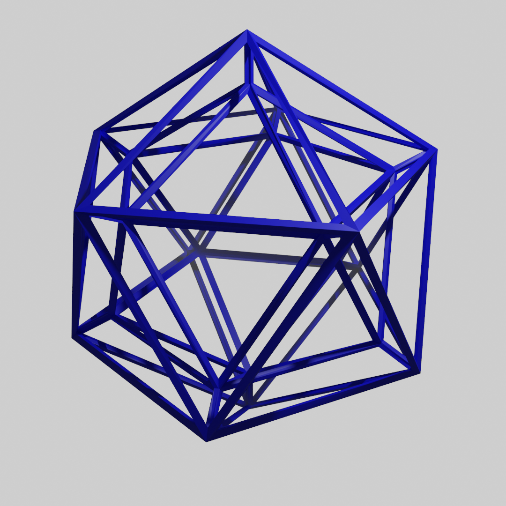

| Quick facts | |
|---|---|
| Grid | MeshPrismGrid |
| CellType | NGonPrismCellType* |
| CellDir | CellDir* |
| CellRotation | CellRotation* |
| Bound | None |
| Properties | 3d, Finite |
| *NGonPrismCellType represents any extruded polygon. But for 4 and 6 sided faces, the values overlap with CubeCellType and HexPrismCellType, and the corresponding CubeDir, CubeRotation, PTHexPrismDir, HexRotation. | |
MeshPrismGrid is a variant of MeshGrid which takes that finite grid, and makes 3d cells from each face by extruding the faces out along the normals supplied in the mesh.

Optionally, you can create multiple layers, each stacked atop the next in the direction of the normals.
MeshPrismGridOptions
This options class uess the same values as MeshGridOptions with the following additions.
LayerHeight
The height of each layer (default 1).
LayerOffset
Determines the location of the center of each cell on layer 0, relative to the center of the corresponding mesh face, moving along the face normal.
The default is 0, meaning that the center of each cell in layer 0 lies on the original mesh.
MinLayer
The minimum layer index.
MaxLayer
The exclusive maximum layer index. I.e. There are layers for all values MinLayer <= i < MaxLayer.
SmoothNormals
If enabled, attempts to bend the normals of the cell deformations in such a way that they are continuous between adjacent cells, without having to evaluate all the cells to work it out.
This requires the input mesh to have sensible UVs and tangents defined.
Cell co-ordinates
The x value is used to index the face in the submesh, the y value indicates the submesh, if any, and the z value determines the layer.
Deformation
Like MeshGrid, MeshPrismGrid.GetDeformation is a useful method for warping meshes to fit the cell.